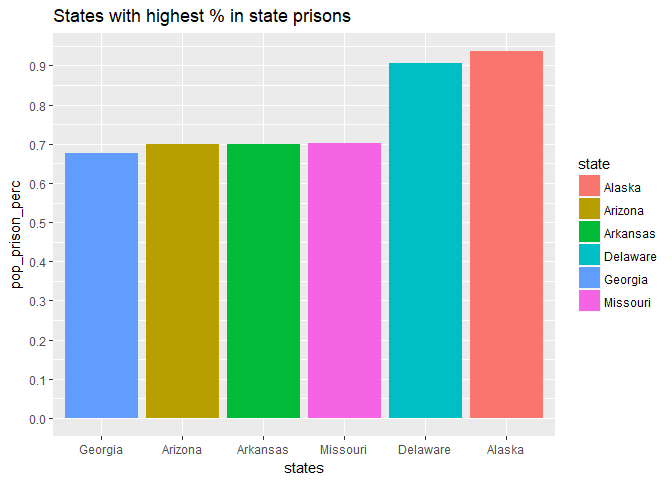
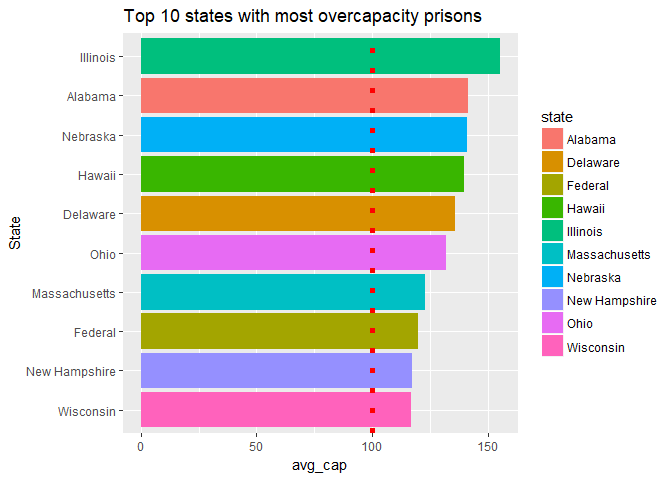
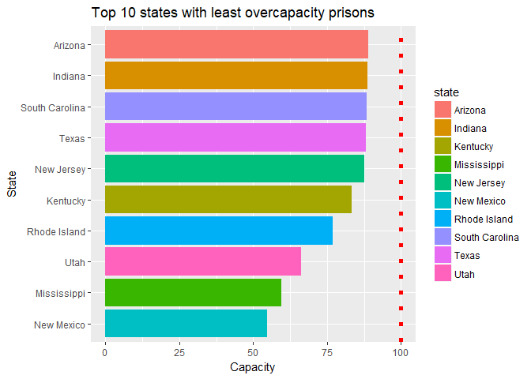
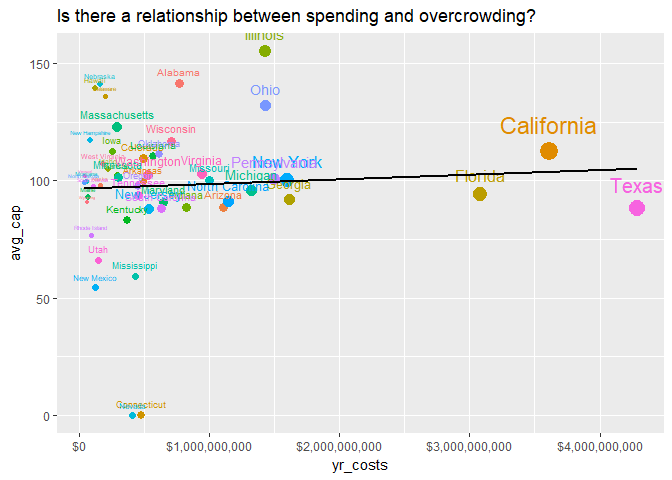
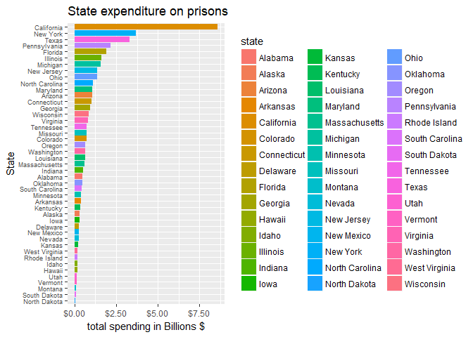
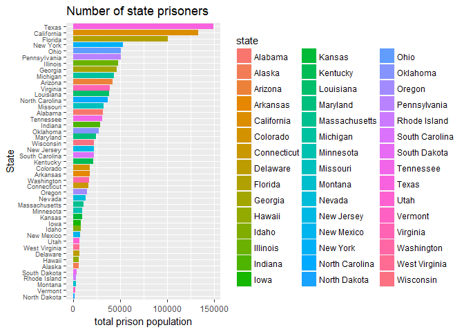
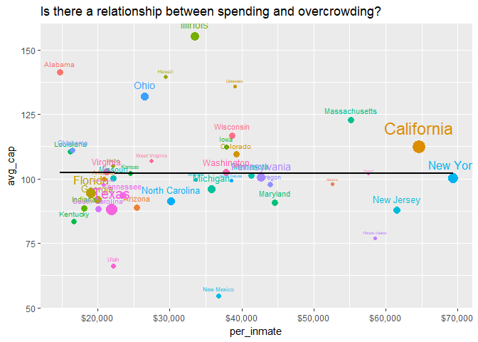
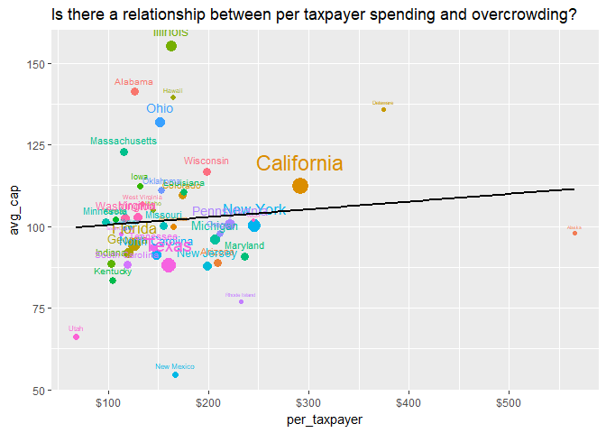
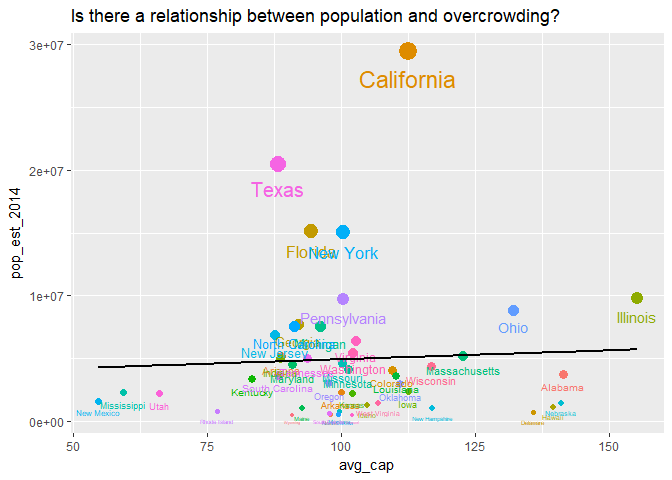

Data analysis: Overcrowding in US State Prisons
So just how overcrowded are US prisons?
These data were taken from the Bureau of Justice Statistics website, which has lots of interesting data about crime in America.
This dataset was called “Prisoners in 2015” on the Bureau of Justice Statistics website
Just so we are all on the same page here, the BJS measures “capacity” in three ways: the operational capacity, which is the “Number of inmates that can be accommodated based on a facility’s staff, existing programs and services,” and the rated capacity, which is “a rating given by officials,” and finally design capacity, which is, “how many inmates architects/planners originally intended for facilities.”
In short, each of these numbers will be slightly different, so how one defines “capacity” will lead to different conclusions. For example, a prison might be 110% overcapacity if we use the operational capacity, but only 95% capacity if we use the rated capacity.
Let’s read in the data and clean it up.
This dataset was particularly annoying to deal with because for some reason the … weren’t being dealt with correctly until manually copy and pasted the values using double quotes.
library(tidyverse)
library(stringr)
#the original files used ... and / to denote NAs
df <- read.csv('prison.csv', skip= 12, stringsAsFactors = FALSE, na.strings = c("…", '/'))
#check out the data
head(df,5)
## Jurisdiction Rated Operational Design Custody.population
## 1 Federal/b 134,461 <NA> <NA> 160,946
## 2 Alabama/c <NA> 25,763 13,318 24,814
## 3 Alaska/d <NA> 5,352 <NA> 5,247
## 4 Arizona 37,238 43,747 37,238 35,733
## 5 Arkansas 16,194 16,233 15,382 15,784
## Lowest.capacity.a X Highest.capacity.a X.1
## 1 119.7 % 119.7 %
## 2 186.3 96.3
## 3 98.0 98.0
## 4 96.0 81.7
## 5 102.6 97.2
#remove extra columns
df <- df[1:51,-c(7,9)]
#Convert NAs to 0
df[is.na(df)] <- 0
#We are going to join our dataframe to this one later
state_pop <- read.csv('statepop1.csv')
#Correct backslashes in names of jurisdictions
bad <- df[which(str_detect(df$Jurisdiction, '[:punct:]')),]$Jurisdiction
#if have slash, then delete last three chars
df[which(str_detect(df$Jurisdiction, '[:punct:]')),]$Jurisdiction <- str_sub(bad, end = -3)
#this one manually do because had 3 chars after slash
df[which(df$Jurisdiction == 'Idaho/e'),]$Jurisdiction <- 'Idaho'
#replace commas in numbers
df[,2:ncol(df)] <- lapply(df[,2:ncol(df)], function(x) as.numeric(gsub(",", "", as.character(x))))
#make column names the same for joining
colnames(df)[1] <- 'state'
full_df <- left_join(df,state_pop, by='state')
#we'll use the total population of the USA for the federal population
full_df[1,'pop_est_2014'] <- 325000000
#instead of high and low capacity percentages, we'll average both to get one statistic
avgcap <- full_df %>%
group_by(state)%>%
mutate(avg_cap = mean(c(Lowest.capacity.a, Highest.capacity.a)))
#apply to new column
full_df$avg_cap <- avgcap$avg_cap
Now, our population stats are a little bit off because those numbers include children over the age of 18. In order to be fair, we will estimate the number of state residents over the age of 18. According to Google, in the USA about 76% of the population is older than 18. So we will reduce the population for each state by 24%.
full_df <- full_df %>%
mutate(pop_est_2014 = pop_est_2014*.76)
#Now compute the % of prison age population in prison
full_df <- full_df %>%
mutate(pop_prison_perc = Custody.population/pop_est_2014*100)
Now let’s look at the top 10 states with highest % of residents in state prison
full_df %>%
group_by(state)%>%
arrange(desc(pop_prison_perc))%>%
head()%>%
ggplot(aes(reorder(state, pop_prison_perc), pop_prison_perc, fill=state))+
geom_col()+
scale_y_continuous(breaks = seq(from=0, to=1, by=.1))+
labs(title='States with highest % in state prisons', x='states')

So Alaska and Delaware both have nearly 1% of their populations in state prisons. Keep in mind this is NOT counting those in jail. The real numbers are probably much bigger when jails are included.
What about which state has the highest average capacity?
full_df %>%
arrange(desc(avg_cap))%>%
head(10)%>%
ggplot(aes(reorder(state, avg_cap), avg_cap, fill=state))+
geom_col()+
labs(title='Top 10 states with most overcapacity prisons', x='State')+
geom_hline(yintercept=100, color='red', linetype='dotted', size=2)+
coord_flip()

We see Illinois clearly out in the lead with the most overcrowded prisons. Anyone know why it’s particularly bad there?
This article suggests it’s due to problems with Illinois’ sentencing laws.
What about which states have the LEAST full prisons?
full_df %>%
filter(!state %in% c('Nevada', 'Connecticut'))%>% #Nevada and Connecticut state data were missing!
arrange(avg_cap)%>%
head(10)%>%
ggplot(aes(reorder(state, avg_cap), avg_cap, fill=state))+
geom_col()+
labs(title='Top 10 states with least overcapacity prisons', x='State', y='Capacity')+
geom_hline(yintercept=100, color='red', linetype='dotted', size=2)+
coord_flip()

New Mexico and Mississippi seem to have the least overcrowded prisons. Nevertheless, there are reports like these that suggest the NM prison population is increasing fast. Keep in mind these were 2015 numbers.
It’s often mentioned that the cost of housing/feeding/medical care for inmates is high. Let’s visually examine the costs.
Google tells me that the average annual cost per inmate is about $31,100. That works out to about $84 per day. Most of the hotels I stay in cost less than that. Some states, such as NY, pay as much as $60,000 a year to take care of state prison inmates.
UPDATE I found the actual amounts states spend per inmate per year and they vary widely. So when we use the true amounts, this chart looks very different. (I previously used the state average, $31,000, to estimate state spending. It turns out if you do this, Texas spends by far the most– more than California. But in reality, Texas spends way less per inmate than California, so the total expenditures are lower.)
We will use the data from the website vera.org that has some nice articles discussing prison reform in the USA.
Then we will use the Rvest package to download the table data and extract the numbers.
library(rvest)
library(tidyverse)
url <- 'https://www.vera.org/publications/price-of-prisons-2015-state-spending-trends/price-of-prisons-2015-state-spending-trends/price-of-prisons-2015-state-spending-trends-prison-spending'
#read in the website parse the html
vera <- read_html(url)
#Use the CSS selector to extract table data from the webiste
html_data <- html_nodes(vera,'td')
table_text <- html_text(html_data)
#turn into matrix
mat <- as.data.frame(matrix(table_text, nrow=45, ncol=4, byrow=TRUE), stringsAsFactors = FALSE)
#trim strings
mat[, 2:ncol(mat)] <- lapply(mat[,2:ncol(mat)], stringr::str_trim, 'both')
#replace commas in numbers and dollar signs
mat[,2:ncol(mat)] <- lapply(mat[,2:ncol(mat)], function(x) as.numeric(gsub("[\\$,]", "", as.character(x))))
#Rename columns
mat <- mat %>%
rename('state' = V1, 'prison_pop' = V2, 'prison_exp' = V3, 'per_inmate' = V4)
Now that we have processed the scraped numbers, let us visualize the results.
#inmate spending
ggplot(mat, aes(reorder(state, per_inmate), per_inmate, fill=state))+
geom_col()+
coord_flip()+
scale_y_continuous(labels = scales::dollar_format())+
theme(axis.text.y = element_text(size=7))+
labs(title='Actual spending per inmate by state', x='State', y='Avg. annual spending per inmate')

#total expenditures
ggplot(mat, aes(reorder(state, prison_exp), prison_exp/1000000000, fill=state))+
geom_col()+
coord_flip()+
scale_y_continuous(labels = scales::dollar_format())+
theme(axis.text.y = element_text(size=7))+
labs(title='State expenditure on prisons', x='State', y='total spending in Billions $')

#total population
ggplot(mat, aes(reorder(state, prison_pop), prison_pop, fill=state))+
geom_col()+
coord_flip()+
theme(axis.text.y = element_text(size=7))+
labs(title='Number of state prisoners', x='State', y='total prison population')

The sad thing about this is that Texas and Florida have a lot of prisoners, relatively speaking, yet they spend so little on each one that the total expenditure is somewhat low. I don’t know how or why they can spend so little on the prisoners. Vera.org suggested that instead of dividing expenditures by the prison population, it might make more sense to divide the expenditures by the state population. Vera.org notes that states with high inmate costs arise because these states have a lower personnel-to-inmate ratio and higher average salaries in those states.
Let’s make this bar chart again, but this time we’ll look at the inmate spending per taxpayer (18 years or older).
#join the two tables
df_join <- mat %>%
inner_join(full_df, by = 'state')%>%
mutate(per_taxpayer = prison_exp/pop_est_2014)
#plot the per taxpayer avg spending per inmate
ggplot(df_join, aes(reorder(state, per_taxpayer), per_taxpayer, fill=state))+
geom_col()+
scale_y_continuous(breaks = seq(0,600, 100),labels = scales::dollar_format())+
coord_flip()+
theme(axis.text.y = element_text(size=7))+
labs(title='Per resident spending', x='State', y='Prison spending per resident')

This graphic paints a very different picture than the previous per inmate spending. Now states with low incarceration rates will be equalized. So for example, Utah has a low incarceration rate and low per inmate spending and so has a low per taxpayer expenditure. Recall earlier that we saw that both Alaska and Delaware had nearly 1% of the adult population in prison. Due to the relatively high incarceration rates and spending per inmate, their per taxpayer costs are pretty high.
Finally, is there any connection between spending and being overcapacity? We would expect that more spending is correlated to less overcrowding, right?
df_join %>%
filter(!state %in% c('Federal', 'Nevada', 'Connecticut'))%>%
ggplot(aes(per_inmate, avg_cap, size=pop_est_2014, color=state))+
geom_point()+
scale_x_continuous(labels = scales::dollar_format())+
geom_text(aes(label = state), vjust = -1)+
theme(legend.position = "none")+
stat_smooth(method='lm',color='black', se=FALSE)+
labs(title='Is there a relationship between spending and overcrowding?')

This is interesting. There appears to be no relationship between a state’s per inmate spending and the overcapacity. Essentially this implies that most of the inmate spending is not being used to alleviate overcrowding, although it might be going towards higher salaries for guards and medical services, for example.
df_join %>%
filter(!state %in% c('Federal', 'Nevada', 'Connecticut'))%>%
ggplot(aes(per_taxpayer, avg_cap, size=pop_est_2014, color=state))+
geom_point()+
scale_x_continuous(labels = scales::dollar_format())+
geom_text(aes(label = state), vjust = -1)+
theme(legend.position = "none")+
stat_smooth(method='lm',color='black', se=FALSE)+
labs(title='Is there a relationship between per taxpayer spending and overcrowding?')

Secondly, the relationship between per taxpayer spending on inmates and overcapacity is positive. Somehow spending more per taxpayer is associated with more overcrowding in prisons. This is pretty counter-intuitive. Is it a coincidence that two of the states with the highest per taxpayer spending are states with relatively high incarceration rates and small populations?
full_df %>%
filter(!state %in% c('Federal', 'Nevada', 'Connecticut'))%>%
ggplot(aes(avg_cap, pop_est_2014, size= pop_est_2014,color=state))+
geom_point()+
geom_text(aes(label = state), vjust = 2)+
theme(legend.position = "none")+
stat_smooth(method='lm',color='black', se=FALSE)+
labs(title='Is there a relationship between population and overcrowding?')

Overall, there does seem to be a relationship, albeit relatively weak, between a state’s population and the overcrowdedness. Perhaps states tend to build similar numbers of state prisons, regardless of population size, thus resulting in slightly more crowded prisons in states with bigger populations?
Summary
I was surprised to find that Illinois leads the country in overcrowded prisons and that Alaska and Delaware keep the highest percentage of citizens in state prisons, and if you look at the spending per taxpayer, these states are the top two in the country.
As far as per inmate spending goes, California is in a league of its own. But if you look at it in terms of per taxpayer spending, California doesn’t look so bad. All of this goes to show that subtle changes in computation can lead to very different conclusions. If I wanted to push for prison reform, I might cite the statistic that California pays way more per inmate than any other state. Yet, if I look at the per taxpayer spending, California does better and now it doesn’t seem like immediate reform is so urgent.